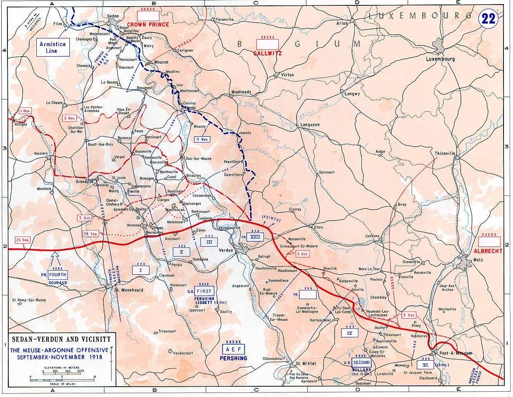
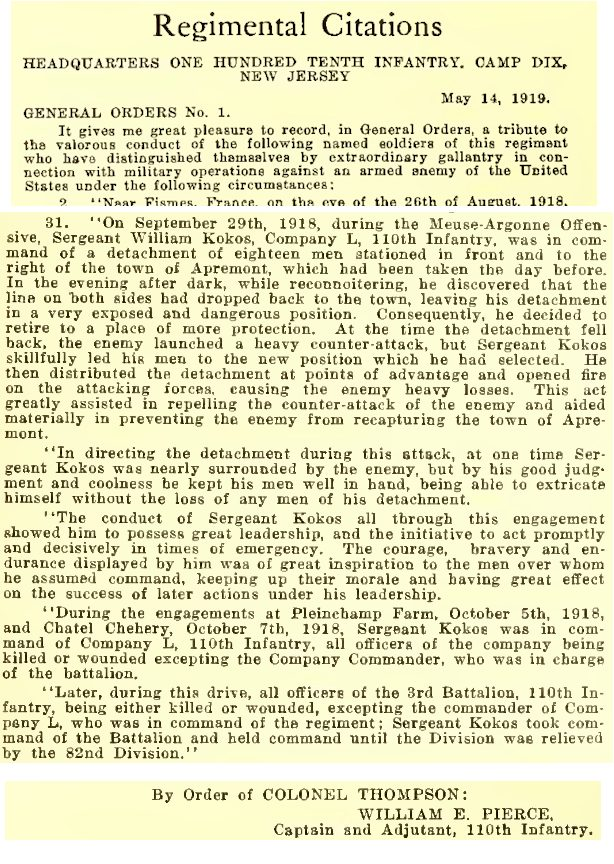
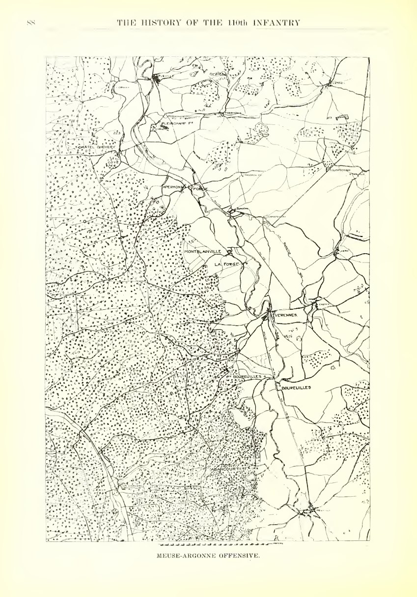

In eight days Company L lost every officer it had except one — and the man left holding it was a sergeant.
To understand what happened to Alexander Bryant’s company in the first week of October, you have to follow what happened to its officers.
The American First Army attacked on a front running roughly twenty miles, from the Argonne forest on the west to the Meuse on the east. Nine divisions went forward. The 28th — Alexander’s — was on the left, working up the valley of the Aire. The 80th — David’s — was on the right, driving toward the Meuse.

Three days in, Sergeant William Kokos was out beyond a town taken the day before, in command of a detachment of eighteen men. Going forward after dark to see what was in front of him, he found the line had fallen back on both sides and left the detachment hanging in the open.
Sergeant Kokos, with a detachment of eighteen men, was in an advanced position in front of the town of Apremont… In directing the detachment during this attack, at one time Sergeant Kokos was nearly surrounded by the enemy, but by his good judgment and coolness he kept his men well in hand, being able to extricate himself without the loss of any men of his detachment. Regimental General Orders No. 1, 110th Infantry, 19 May 1919

Two days after Apremont, Kokos was commanding Company L.
This was not a promotion. He remained a sergeant, and every document in this project calls him one. What had happened was that the company had run out of officers, and the senior enlisted man picked it up — which is precisely what the system expected of him.
Then it got worse. The citation is exact about the sequence, and it is worth reading closely because the usual summary of it is wrong.
… all officers of the company being killed or wounded excepting the company commander, who was in charge of the battalion… and later, all officers of the Third Battalion being killed or wounded excepting the commander of Company L, who was in command of the regiment. Regimental General Orders No. 1, 110th Infantry
By 7 October the arrangement in Company L was this: a sergeant commanding the company, with the platoons run by whichever sergeants were still standing. Within days Kokos would be acting commander of the battalion — four companies, in theory around a thousand men — and he would hold it until the division was relieved.

Alexander Bryant had joined this company three weeks earlier, on 15 September, as a replacement from Virginia among Pennsylvanians. Everything above happened while he was in it.